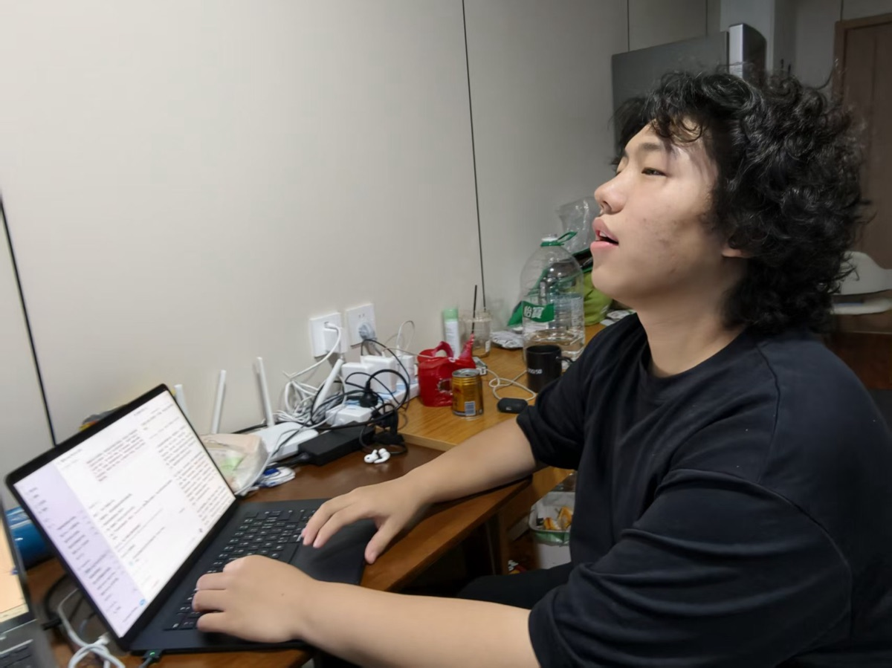

6.16-6.28 阶段性汇报
一开始就是读论文。先沿着论文路线读了几篇：TD-MPC、PRISM-WM、Puppeteer、Cosmos Policy、Newt。（对机器人和 Physical AI 的理解有限，过往比较浅的积累也更多在语言模型上，所以控制相关内容读得比较吃力，很多名词和系统关系在第一次读时不能彻底理解和记住。）当时我的主要目标，是先把方法本身看懂，以及把一些名词和地基搞清楚：世界模型在机器人里怎么用，规划器怎么接上去，模型预测的未来怎么变成动作。
这个阶段也写了几篇博客作为输出，也帮助自己学习：TD-MPC：世界模型不必还原世界、PRISM-WM：世界模型不能把接触平均掉、Puppeteer：把 humanoid 控制拆成两层 world model、Cosmos Policy：视频模型怎样输出机器人动作。
但是这样很容易变成收集名词，而且漫无目的地读对系统性理解和记忆并不有效，也很难激发点子。对我来说，更有效的方式可能是：先找到一个值得推进的问题，再带着这个问题回去读论文。因为最终推进不是为了“读完很多篇”，而是希望能从里面长出一个可以讨论、可以实验、也可能有创新空间的方向。所以下一步是找问题。
于是后来我把重心倾斜到了“先找问题”。那段时间我花了一些时间去搜材料、选方向，再把相关论文补回来读。下面是在这个过程中对我影响比较大的一些信号：World Models: A Comprehensive Survey、NVIDIA 的 World Action Model、Cosmos Policy 和 Cosmos 3。他们共同指向的不是“世界模型能生成未来”本身，而是更长时程的行动闭环：模型想象出的未来要在多步任务里保持一致，要能支持动作选择、策略评估和纠错。此外，还做了一下多源研究 Stanford / CMU / MIT AI 顶会研究时间轴，把三校近半年 615 篇可枚举顶会论文按主题摊开看：其中世界模型 / 机器人 / VLA 有 42 篇，其中的工作经常落在闭环规划、记忆、事件验证和可信预测长度这些问题上。（btw，World Models 综述里把 long-horizon consistency and error compounding 放在挑战列表的第一位，也许这也是选择他的一个原因：）
还有一个原因是 RSI（recursive self-improvement）。我现在的判断是，不管是 language model 里的 agent，还是 Physical AI 里的机器人系统，我觉得最终一定要走向能持续自我改进的系统，那就一定绕不开长时程里的可信问题：目标不能漂移，状态不能丢，反馈不能被错误模型带偏，过程还要尽量高效，并且和人的预期保持对齐。这样看，不管从学术还是工业的角度，Long Horizon 都是一个比较好的切入点。
于是最开始从自己平时接触比较多的语言模型里的 RL 入手对比：语言模型智能体里也在讲长任务，比如长工具调用、长时间编码、跨多轮任务保持状态；机器人世界模型里也在讲长任务，比如预测越滚越偏、闭环规划、任务阶段推进。它们是不是同一个问题？于是写了两篇文章梳理了一下这个问题：Two Long Horizons 主要比较两个领域里的“长任务”到底长在哪里，核心 insight 是 long horizon 不只是时间变长，而是系统要在更长链条里保持目标、状态和反馈不漂；From Rollout to Context 则把 robot world model 的 rollout 和 LLM agent 的 context 放在一起看，说明相似的地方是都要在长过程中保持可靠，不同的地方是机器人还要面对物理状态、动作和环境反馈。不过这是这两周比较早期写的，所以涉及的还比较浅显。
既然已经定了要关注的方向，下一步知道近期到底在做什么、关注什么方向是必要的。于是我做了两篇整理：一篇是 Long Horizon：机器人世界模型的研究矩阵，用来看大家把这个问题拆成哪些方向；另一篇是 Long Horizon：152 篇世界模型论文阅读梯队，汇总这些论文的重要性和阅读优先级。
但只知道“大家在做什么”不够。下一步需要做的是：这些主张是怎么被实验验证的？一篇论文如果说自己解决了长任务问题，它到底设计了什么任务、用了什么平台、跟谁比、看哪些指标、消融实验拆掉了什么？所以写了 Long Horizon World Models：从主张到实验。简单学了大家都是怎么验证的。
其中有几个觉得有价值的观察到的点。
- 先选一个旧系统会稳定失败的场景（接触、遮挡、阶段切换、planner 高分误判）。
- 记录 planner 生成的候选动作、模型给分、真实执行结果，检查模型评分和真实成功是否一致。
- 做消融实验。拆掉 verifier / event signal / contact signal / memory / planning horizon 等组件，观察哪类错误增加。
Long Horizon 还是一个比较大的东西，需要再切分子命题。于是尝试把它拆得更细，写了 Long-horizon world model 的五个接口，和 Long Horizon Is Not One Problem。长任务失败可能发生在不同位置：模型预测会漂，规划器会利用模型错误，任务阶段需要被验证，动作空间可能太底层，物体和历史状态也可能丢失。在这其中，我觉得接下来有很大可做的方向是 Verifier 和 Planner。
觉得需要系统性理解这整个领域，于是尝试把这些论文放回一个更大的机器人叙事里，写了 机器人世界模型的闭环底图：long-horizon 论文都在改哪个零件。
后面又沿着 Long Horizon / closed loop，做了一个 Long Horizon：152 篇世界模型论文阅读梯队，把 150 多篇相关论文按阅读优先级和关注方向先整理出来。这样不是横向乱读，而是先知道哪些论文更值得优先看、哪些可以作为补充材料。然后根据这份梯度，又读了几篇更具体的文章，并写了几篇博客：
- GRASP：把中间状态也变成规划变量，看 planner 自己的优化变量。
- EV-WM：验证事件，不验特征，看 verifier 怎么检查 imagined future 里的任务事件。
- WAV：用 forward-inverse asymmetry 验证动作，看 verifier 怎么检查动作可达性。
- Long-horizon rollouts as overestimation control，看 rollout 走多远会影响 value overestimation。
- WEAVER：一个同时做到保真、一致、快的世界模型，看一个 world model 怎么同时服务 policy evaluation、policy improvement 和 test-time planning。
- World Model 的 Transition Operator：VLWM 和 PRISM-WM 改了同一个接口，把 VLWM 和 PRISM-WM 放到同一个接口里理解。
又结合这几天的思考和所学，整理了一份研究方向，尝试把可能能做的方向、idea 和研究问题先放在一起（当然还不够成熟，应该还需要迭代几次思考）。
方法上的一些思考：
- build in public：写文章是一个很好的output as learning的手段，博客更好的立足点是“我想要教对方什么东西”。
- task oriented：推进事情需要有一个目标是更好的。verifier和ddl要明确。
- claude Code + codex ：同时用，共享context，互相批判，辅助学习，产出文档。
- 系统性学习：了解当前范式，放在一个大的工业底图里面。多读论文去填充钉子，读论文也需要scaling law :)
- e2e负责，一条线打通的能力是极为重要的。
- 审稿人偏好真机环境的，有消融实验的，鲁棒性高的：）
下一步的规划（按重要性排序）
- coding和做实验。需要真实做事情。（80%）
-
问题导向地读剩下的100多篇近期的论文（这里可以引用一下我的论文梯度。）有两个关注点：（10%）
- 形成有趣有价值的创新点和insight的阅读。目前的论文阅读积累还不够，虽然已有比较浅的认知，但是还不能足以形成我愿意并且有能力带队做的idea和insight。
- task-oriented地去读实验部分。这个是在要推进的问题之后的。
- RL、具身相关的数理基础、底层原理。干中学。（5%）
- 语言模型的scaling和RL会持续关注。当然，这个是在核心的world model的主线之后，产出形式可能就是简单的博客文章和一些代码库。（5%）
之前和带我创业的导师分别的时候，承诺说想两月做一篇一作的工作，至少是挂在arXiv上面，当然可以中会中刊再好不过：）所以这里也立一个DDL吧，我也期待这两个月内能够出一篇一作的工作。（当然之前没有接触过科研工作，如果这个时间是过于浮躁了，也是依据具体的工作去调整的，时间不是一个值得去reward hack的一个东西。）
Source
个人博客 / 文章
这些博客文章均可以在我的 Writing 页面找到。
- TD-MPC: A World Model for Action / TD-MPC：世界模型不必还原世界
- PRISM-WM: A World Model Should Not Average Contact Away / PRISM-WM：世界模型不能把接触平均掉
- Puppeteer：把 humanoid 控制拆成两层 world model
- Cosmos Policy: How a Video Model Outputs Actions / Cosmos Policy：视频模型怎样输出机器人动作
- Two Long Horizons / 两个 Long Horizon
- From Rollout to Context / 从 Rollout 到 Context
- Stanford / CMU / MIT AI 顶会研究时间轴
- Long Horizon：机器人世界模型的研究矩阵
- Long Horizon：152 篇世界模型论文阅读梯队
- Long Horizon World Models：从主张到实验
- Long-horizon world model 的五个接口
- Long Horizon Is Not One Problem / 长程：六种失败，五种应对
- 机器人世界模型的闭环底图：long-horizon 论文都在改哪个零件
- GRASP: planning by optimizing the states in between / GRASP：把中间状态也变成规划变量
- EV-WM: verifying events, not features / EV-WM：验证事件，不验特征
- WAV: verifying actions through forward-inverse asymmetry / WAV：用 forward-inverse asymmetry 验证动作
- Long-horizon rollouts as overestimation control / 想象得越长，价值高估反而越小
- WEAVER: a world model that is faithful, consistent, and fast at once / WEAVER：一个同时做到保真、一致、快的世界模型
- World Model 的 Transition Operator：VLWM 和 PRISM-WM 改了同一个接口
外部链接
- Temporal Difference Learning for Model Predictive Control
- Prismatic World Model
- Puppeteer
- Cosmos Policy
- Newt
- World Models: A Comprehensive Survey
- World Models for Robot Learning: A Comprehensive Survey
- NVIDIA World Action Model
- Cosmos Policy project
- Cosmos 3
- Gemini 3.5: frontier intelligence with action
- GRASP
- Event-Verified World Model
- World Action Verifier
- NEUBAY
- WEAVER
- Variable-Length Latent World Models

彩蛋，被拍摄于6月27日的凌晨4点，淡淡的死了。🤕